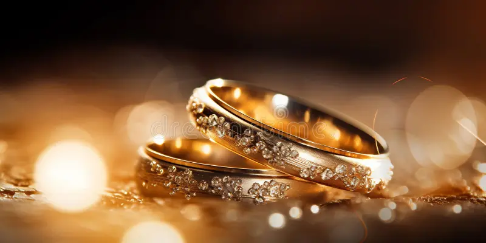

Wedding-Planning Checklist and Timeline
A Complete Wedding Planning Checklist for Your Big Day
No two weddings are the same, and you may feel some wedding planning tasks
listed below do not represent your celebration. The actual wedding planning
timeline itself could also be entirely different to your own.
We’ve used a 12-month engagement to create this plan, just to keep things simple.
However, the average is often more like 16–18 months. With this in mind, it’s
important you use our wedding planning checklist as a template. Adapting the timings,
events, and tasks to suit your own big day.
Wedding planning doesn’t have to be stressful, in fact, thanks to our checklist,
we believe it’ll actually be fun!

- 12 MONTHS UNTIL THE WEDDING
- 11 MONTHS UNTIL THE WEDDING
- 10 MONTHS UNTIL THE WEDDING
- 09 MONTHS UNTIL THE WEDDING
- 08 MONTHS UNTIL THE WEDDING
- 07 MONTHS UNTIL THE WEDDING
- 06 MONTHS UNTIL THE WEDDING
- 05 MONTHS UNTIL THE WEDDING
- 04 MONTHS UNTIL THE WEDDING
- 03 MONTHS UNTIL THE WEDDING
- 02 MONTHS UNTIL THE WEDDING
- 01 MONTHS UNTIL THE WEDDING
- A WEEK BEFORE WEDDING
12 MONTHS UNTIL THE WEDDING
Insure the Engagement Ring

Work Out Your Budget
Start Creating a Guest List
The size of your venue and the size of your budget will dictate the number of people
you can invite to your wedding. Which is why it’s so crucial to follow a wedding planning checklist
such as ours, and attempt to complete tasks in order.
Talk to Each Other About Priorities
Start your marriage in the right way, by discussing what you both want from your wedding.
Do you want it to be a large family affair? A celebration of the union between your families. Or would you
prefer the day was more about you? With just close friends and family invited. These two wedding styles are
both ends of the spectrum, and it’s likely you’ll know by now which of these camps your partner fits into.
But you should make sure.
There are many critical aspects to a wedding that your partner may have strong feelings about. And it’s essential
you discuss these points before planning can really progress.
Choose a Wedding Venue
The wedding venue you select will impact every other planning decision you make. Unquestionably.
It will likely be the biggest expenditure in your wedding budget. Therefore, it will dictate how much you can spend
on everything else.
Its location will determine which vendors you can hire. Its style will guide the theme of your big day,
sometimes quite dramatically. And its size will certainly impact how many guests you can invite.
Pick a Date
It’s good to have a range of dates in mind when contacting venues and pivotal vendors. Remaining flexible on when exactly you want to tie the knot.
The availability of your venue will likely be the deciding factor in your wedding date. But if there are VIPs in your family or circle of friends who you cannot
imagine getting hitched without, it’s best to consult them too before finalizing anything in the diary.
11 MONTHS UNTIL THE WEDDING
Book the Most In Demand Wedding Vendors
Vendors such as photographers, videographers, musicians, and caterers play such a critical role in the feel of a wedding, that they get booked up many
months, if not years in advance.
Photographers in particular are responsible for capturing your memories. They are the only vendor whose value can be truly felt long after the big day.
Which is
why they are considered an ‘investment’, and are selected with much higher scrutiny than other services.
All the vendors mentioned above will be in high demand during peak wedding season, and the last thing you want is to miss out on the perfect person or team.
Decide on the priority suppliers for you, and book them early to avoid disappointment.
Begin Putting Together Your Theme
Fun stuff, finally! And this is such a fun time because no major design decisions have to be made right now. You should just be feeling out what
works for you, and what suits the space you’re marrying in.
Get lost on Pinterest, create some physical mood boards and get playful with color ideas. If you’re struggling for inspiration, or you’re feeling overwhelmed
with the number of influences online, talk to loved ones. They don’t even have to be married. Just pull together a bunch of friends, and family who you feel
will be creatively useful, and see what you all come up with. Worse comes to worst, you have a fun night together!
10 MONTHS UNTIL THE WEDDING
Wedding Dress Shopping
It may surprise you just how long wedding dresses take to order (6-8 months depending on the designer), and be ready to wear on the big day.
Not to mention the time, it can take to find ‘the one’.
Therefore, it’s good to allow yourself plenty of time for wedding dress shopping, to ensure it’s a pleasurable, non-rushed experience.
Pick Your Wedding Party
You may have known for some time who will be in your wedding party, but your friends and family will be waiting anxiously
for confirmation! At this stage, if you’re still deliberating, there’s no need to make a final decision. But it’s good to think about it seriously,
before you get too far into the wedding timeline, and need to order suits, dresses etc for the group.
Nail Down Your Guest List
Finalizing the guest list is a tough task for any couple. Cutting people from the list, picking one guest over another – it can all feel
like a hard pill to swallow. But, it has to be done before you can start ordering stationery or
officially confirming numbers with vendors.
9 MONTHS UNTIL THE WEDDING
Send Out Save the Dates
The perfect companion to your wedding website is the save the date. That piece of card that falls on the mats of everyone invited to your
big day, and officially kicks off the adventure you and your guests are going to go on together!
By this time, you should have a fully formed theme and know what color scheme and style you’re going to be using. Hint at that on your save the dates,
and give guests a little insight into what to expect on the day.
Select & Purchase Your Wedding Dress
To avoid extra stress, and any potential fees for rush deliveries, now is a good point on the wedding planning checklist to order your bridal dress.
Book Other Priority Vendors
You should have already booked your photographer, catering and any other pivotal vendor for your big day. But there are many others who also play
a significant role in the overall ambiance, and logistics of the celebration.
Are you marrying and dinning outside, for example? You’ll need to order a tent, heating, potentially extra power and rentals to help complete the alfresco experience.
These types of rentals, especially the in-demand or more unique ones,
will certainly get booked up during peak season. Get in quick and secure what you need.
8 MONTHS UNTIL THE WEDDING
Book the Florist
Florists are another vendor that tends to fill their diaries early, especially the good ones! Therefore,
it’s wise to request recommendations, thoughtfully browse social media for looks and find the right person as swiftly
as you can. After all, it cannot be overstated the effect flowers have on the overall feel of a wedding day. Therefore,
it pays to get the appropriate florist for you.

Create a Wedding Gift Registry
Couples usually fall into two camps when it comes to wedding gifts. Those who feel a bit weird about requesting gifts from loved ones,
and those who know exactly what they want! If you do feel uneasy about the prospect, remember that your guests will buy you gifts regardless of any registry.
So you might as well request items you actually want, and need.
Talk to each other, go over gift lists together, and decide as a couple what things would best set you up for the future. You may feel you have everything you
need, and actually some cash towards the honeymoon or your new home would be better appreciated. Charity is another option.
Whichever route you take with the gift registry, make it clear on your wedding website and invitations.
Hire Wedding Band/Music
If you’re dreaming of dancing the night away to a live band, or would like musicians to play during your ceremony and other events
during the day – now’s the time to book them!
Choosing an artist capable of performing in a style reflective of your big day vibe is not always straightforward. Therefore, give yourself time
to find the perfect band, musician, or artist. And avoid missing out on booking the ideal performer.
7 MONTHS UNTIL THE WEDDING
Book Wedding Day Transport
Even if your reception is taking place in the same place as your ceremony, there will likely be journeys that still need to be
made during the day/evening, by yourselves and your guests. The cars or buses you choose should reflect the style of celebration you’re planning,
while also, obviously, be suitable for the number of guests you’re inviting. Which can be tricky to work out!
Be sure to look at your guest list carefully, and track who and where movements will take place. Then try to book the right number of vehicles for each journey.
Remember, it’s much better to have one car with only one person in because you overbooked vehicles, than to frantically try to hire taxis on the day.
Some specialty vehicles, such as limos and horse-drawn carriages etc, do get booked up well in advance and will sometimes only do one job a day. Which makes
this a good time to tick off the hiring of all vehicles, just to be sure.
Taste and Decide on the Menu
Deciding menu early according to your choices.
6 MONTHS UNTIL THE WEDDING
Book Hair & Makeup
Having professional hair and makeup done on the morning of your wedding is a great way to prepare for the day. For both you and your bridesmaids.
Plus, it’ll ensure everyone has a coherent look in your wedding photography.
Each hair stylist and makeup artist will have their own style, and approach.
Therefore, finding the right professional for your wedding will take some research. Be sure to look through as many real bride pictures as possible, and
pay close attention to reviews, as these will illustrate just how that vendor works on the day. An important aspect when you consider the typical wedding
morning is often a joyous, yet stressful time. Therefore, you need to find a professional who will orchestrate a calm environment.
5 MONTHS UNTIL THE WEDDING
Book the Dream Honeymoon
During this, rather hectic part of the wedding planning checklist, booking an incredible honeymoon adventure can offer quite a cathartic
experience. Whether you’re planning a dreamy getaway to the Maldives, or something more low-key closer to home. It’s nice to know you’re both working towards
a blissful break.
Honeymoons offer the ideal way to tick off bucket-list destinations, and live the life of luxury for a short while. Which is why it’s key to plan yours well
in advance to ensure every aspect of your trip is covered, and limit the chance of regrets.
4 MONTHS UNTIL THE WEDDING
Organize Outfit Accessories
By this point, both of your outfits should be picked and being prepared on your behalf. But to complete said outfit you’ll need
certain accessories. Items like shoes, veil, certain hair accessories and underwear are all actually key to successful wedding dress alterations.
Which is why it’s a good idea to purchase them before you start fittings.
Shoe height will alter the length of your gown, and different types of undergarments can actually change the fit of your gown.
For those wearing suits, it’s also a good idea to purchase accessories in advance, as cuff links, shoes, and even belts can also affect fit.
Decide on the Finishing Touches
You’ve probably been picking up decor pieces throughout the wedding planning timeline, and by now have amassed quite a collection
of things. Now’s the time to tick off any other smaller items you haven’t purchased, organized rental of, or DIY’d yet.
If you are choosing to make wedding details by hand, don’t leave their creation to the last minute. You’ll only add
extra stress onto your shoulders, and the end result may not look as spectacular as you envisioned.
Many small decor items are actually quite pivotal to the guest experience. Things like place cards, signs, order of service, favors,
and guest book will all be greatly missed if not present, or put together without thought.
3 MONTHS UNTIL THE WEDDING
Choose a Wedding Cake
If you intend to have an engagement shoot, arrange to have your hair and makeup trial on the same day.
That way you’ll have
Don’t go in cold to your hair and makeup trial. Put some time aside on your checklist to research wedding looks and styles you want your
artist to be inspired by. You may end up not having exactly the same look, but it’ll at least give your vendor a good idea of the vibe you desire.

2 MONTHS UNTIL THE WEDDING
Send Wedding Invitations
Now that your wedding invitations are in, and checked, it’s time to send them out to all of your excited guests! If you have guests
coming from overseas, be sure to allow more time for their invitations. And maybe even give them each a call before popping them in the post, just
to allow each of them to make their travel arrangements without feeling pressured.

Arrange Marriage License
Depending on where you’re tying the knot, the laws, and timings for getting a marriage license will differ. With this in mind, don’t
leave this planning task to the last minute. Research early what needs to be done, and whether you need certain individuals, such as guests and/or
an officiant present when obtaining the paperwork.
1 MONTHS UNTIL THE WEDDING
Write Your Vows
If you’re going down the non-religious route, crafting your own vows offers such a lovely way to make a ceremony feel unique,
and personal. Considering how ‘momentous the moment’ is, don’t leave writing your vows to the last minute. Get ahead of the game, and tick this task
off your wedding planning list while your mind is fizzing with excitement, and not pre-wedding nerves.
Have Your Final Wedding Dress Fitting
Every wedding dress fitting schedule will be different, and yours may well be rapped up by now. For most brides, their dress is
typically completed and ready for the big day around a month before. Which is perfect, as it leaves one-less thing to worry about!
Pay Wedding Vendors
A WEEK BEFORE WEDDING
Break in Wedding Shoes
We’ve all bought shoes thinking they’re the perfect fit, only to find after walking two blocks
they’re causing massive blisters. Avoid this on your big day and wear wedding shoes around the house in the week leading up to the rehearsal dinner.
Have Last-Minute Beauty Treatments
There will be some beauty and grooming treatments you shouldn’t leave to the week
of your wedding. Just in case you get an allergic reaction. Waxing, Botox, skin peels and spray tans, for example, all need to be
done in advance. To avoid adverse effects, or not having any effect at all!
Manicures, haircuts, and non-aggressive skin treatments can all be done in the week before your wedding.
We try to make your dream celebration a long-lasting memory.